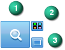

Solution Manager options
The Solution Manager options are located on the Advanced Design Intent panel.
During a synchronous edit, the Solution Manager button appears as (1). The Auto-Solution Manager option (3) is off by default. The Design Intent Options dialog box button (2) opens to provide control of face colors, legend display, and
the Advanced Design Intent display options.

When the Auto-Solution Manager option (3) is turned on, synchronous edits automatically start the Solution Manager.
-
If there are no failures and you are satisfied with the solution, you complete the edit and then select the check box to accept the results.
-
If the solution produces unwanted results or a failed condition, you select the Solution Manager button to make changes to the solving face relationships.